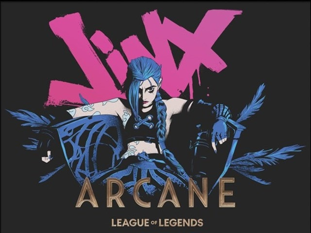

Mi historia
Nací y crecí en Guanajuato Capital. Más adelante me mudé a la ciudad de León, Guanajuato, donde actualmente estudio la carrera de Ingeniería en Computación. Tengo 25 años y desde niño desarrollé un fuerte interés por la tecnología y los videojuegos.

Intereses y Valores
- Videojuegos & Música
- Tecnología & IA
- Curiosidad y aprendizaje constante
- Creatividad en soluciones tecnológicas
Tecnologías que Domino
- Python 3 (nivel intermedio-básico)
- Bases de datos (nivel básico)
- Introducción a Inteligencia Artificial
- Automatizaciones